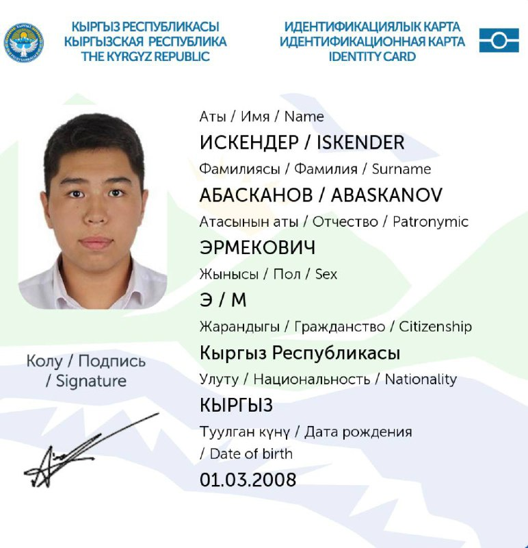
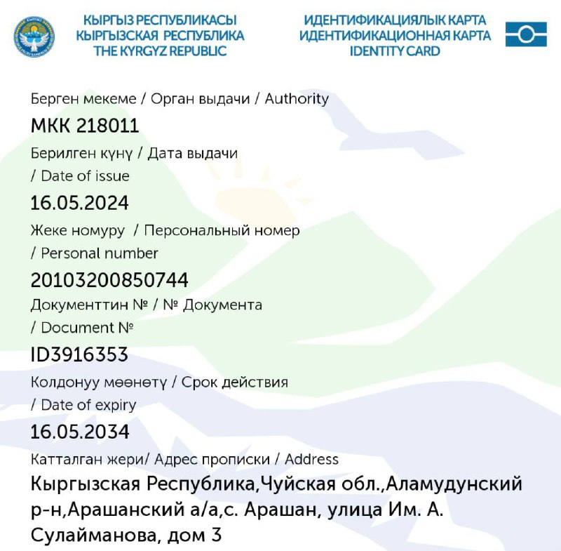

Идентификационная карта


До истечения действия временного QR-кода осталось 2 мин 46 секунд
QR-код цифрового документа
Чтобы поделиться данными необходимо сообщить следующую информацию:
ПИН:
20103200650744
Временный пароль
324608